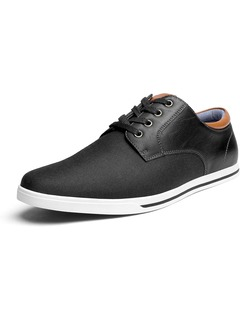

Bruno Marc Men's Rivera Oxfords Shoes Sneakers
Price:10$
Product details:
- Fabric :typeTextile
- Sole material:Rubber
- Outer material:Fabric/Polyurethane
- Closure type:Lace-Up

About this item
- FITTING TIPS: Runs Narrow. Wide feet order one size up. Supple upper features a stylish classic lace-up design
- Comfortable fabric lining and lightly-padded tongue for added support
- Breathable latex leather-covered insoles to cushion your feet on a bed of air
- Durable rubber traction outsole provides good wear characteristics and comfort
- Business casual dress shoes perfect for both the office and weekend wear